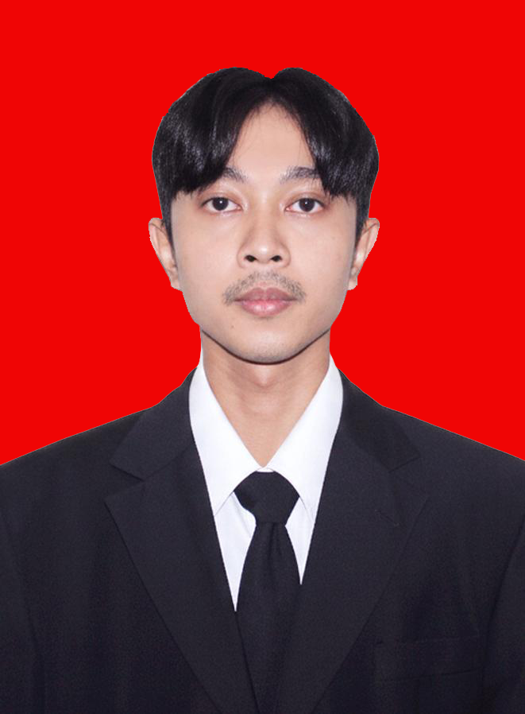
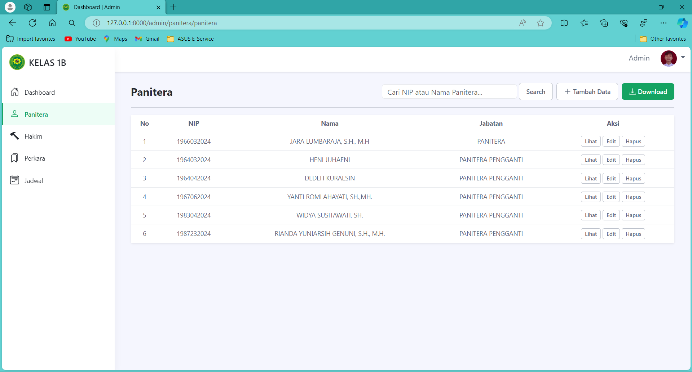
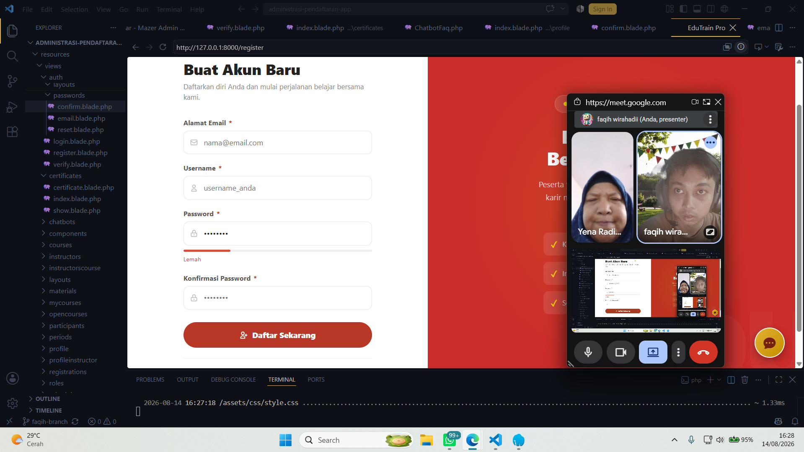
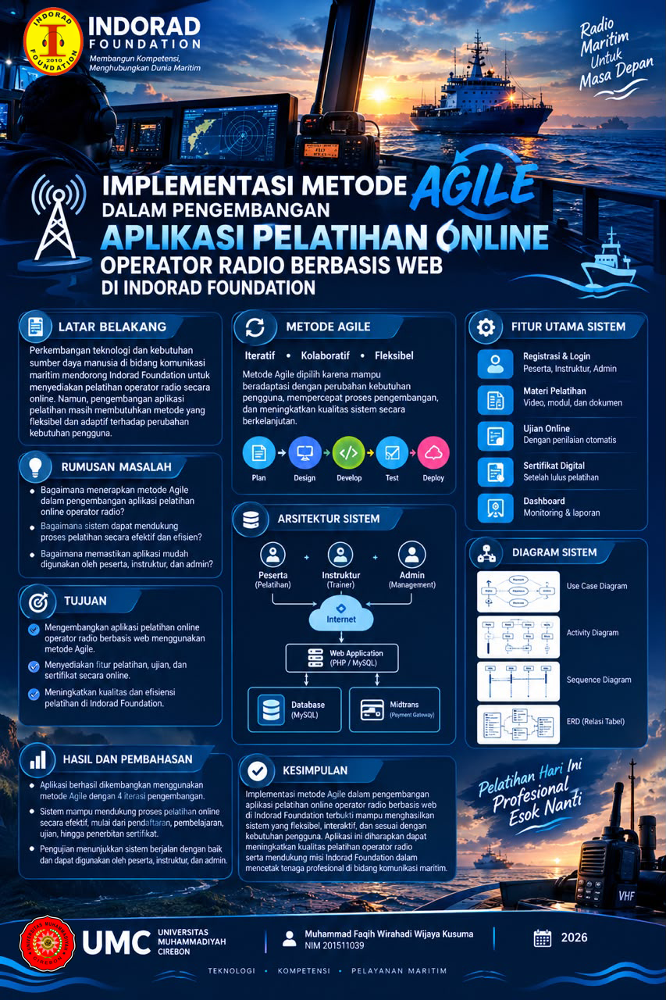
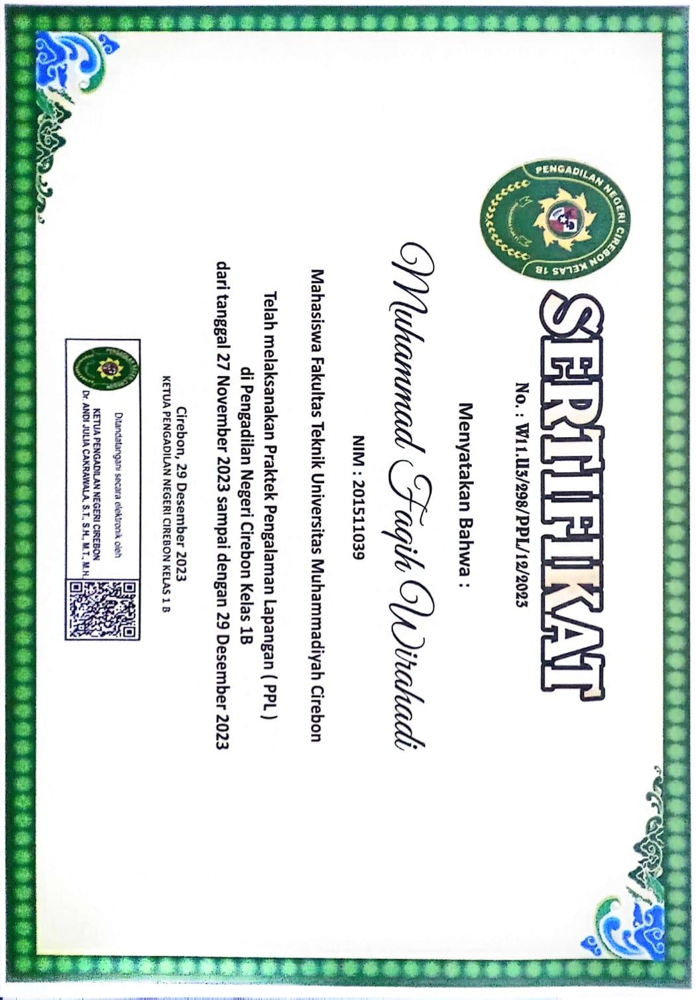

Programming
PHP Native, JavaScript dasar
Halo, saya
Lulusan S1 Teknik Informatika yang tertarik pada pengembangan aplikasi web, pengelolaan basis data, dan solusi teknologi yang membantu pekerjaan menjadi lebih efektif.

01 / TENTANG SAYA
Saya memiliki ketertarikan pada proses membangun aplikasi dari memahami kebutuhan, merancang sistem, mengembangkan fitur, hingga melakukan pengujian.
Melalui pendidikan Teknik Informatika dan proyek tugas akhir, saya mempelajari pengembangan aplikasi berbasis web menggunakan PHP Native dan MySQL. Saya terbiasa bekerja secara terstruktur, teliti, serta terbuka terhadap masukan untuk meningkatkan kualitas sistem.
02 / KOMPETENSI
Teknologi dan konsep yang saya pelajari dan gunakan dalam pengembangan proyek.
PHP Native, JavaScript dasar
HTML5, CSS3, responsive layout
MySQL, SQL, relasi tabel, CRUD
VS Code, XAMPP, phpMyAdmin
Agile, analisis kebutuhan, SDLC
Troubleshooting, testing, dokumentasi
Catatan: sesuaikan daftar teknologi dan tingkat penguasaan dengan kemampuan serta pengalaman aktual.
03 / PORTOFOLIO PROYEK
Proyek utama dari tugas akhir dan ruang untuk menambahkan proyek lainnya.
Aplikasi berbasis web untuk mendukung pengelolaan pelatihan operator radio di Indorad Foundation, mulai dari pendaftaran peserta hingga proses pembelajaran dan evaluasi.
Tambahkan screenshot asli, tautan demo, atau repository GitHub sebelum dipublikasikan.

Aplikasi web untuk membantu pengelolaan data panitera, hakim, perkara, dan jadwal sidang. Dokumentasi ini menampilkan halaman administrasi pengelolaan data panitera.
*Pastikan teknologi sesuai source code. Lihat juga halaman cetak jadwal.



Pengadilan Negeri Cirebon Kelas 1B · Desember 2023
Dokumen ditampilkan sebagai bukti pengalaman praktik lapangan.dalam tahap pengembangan.
NAMA PROYEK + DETAIL →Masukkan latihan coding, aplikasi sederhana, atau kontribusi open-source.
NAMA PROYEK + DETAIL →04 / PERJALANAN
Universitas Muhammadiyah Cirebon
Lulus tahun 2026 · Gelar Sarjana Teknik (S.T.)PT Advanex Indonesia
Mengoperasikan mesin press AIDA 2 TLN, menjaga ketelitian proses produksi, dan mengikuti prosedur keselamatan serta kualitas kerja.Indorad Foundation
Tambahkan tahun pelaksanaan dan detail sertifikat sesuai dokumen yang dimiliki.05 / KONTAK
Saya terbuka untuk berdiskusi mengenai peluang kerja, kolaborasi, dan pengembangan teknologi.
Ganti alamat email dan tautan sosial di file index.html dengan kontak aktif kamu.